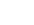

<div class="sidebar">
  <div class="container sidebar-sticky">
    <div class="sidebar-about">
      <h1>{{ site.title }}</h1>
      <p class="lead">{{ site.description }}</p>
    </div>

    <ul class="sidebar-nav">
      <li class="sidebar-nav-item{% if page.title == "Home" %} active{% endif %}">
        <a href="/">Home</a>
      </li>

      {% comment %}
        The code below dynamically generates a sidebar nav of pages with
        `layout: page` in the front-matter. See readme for usage.
      {% endcomment %}

      {% assign pages_list = site.pages %}
      {% for node in pages_list %}
        {% if node.title != null %}
          {% if node.layout == "page" %}
            <li class="sidebar-nav-item{% if page.url == node.url %} active{% endif %}">
              <a href="{{ node.url }}">{{ node.title }}</a>
            </li>
          {% endif %}
        {% endif %}
      {% endfor %}
    </ul>
    <a href="https://github.com/asaphy" target="_blank" class="icon"></a>
    <a href="https://medium.com/@asaphyuan" target="_blank" class="icon"></a>
    <a href="https://www.instagram.com/asaphyuan" target="_blank" class="icon"></a>
    <a href="mailto:asaph.yuan@gmail.com" target="_blank" class="icon"></a>


  </div>
</div>
